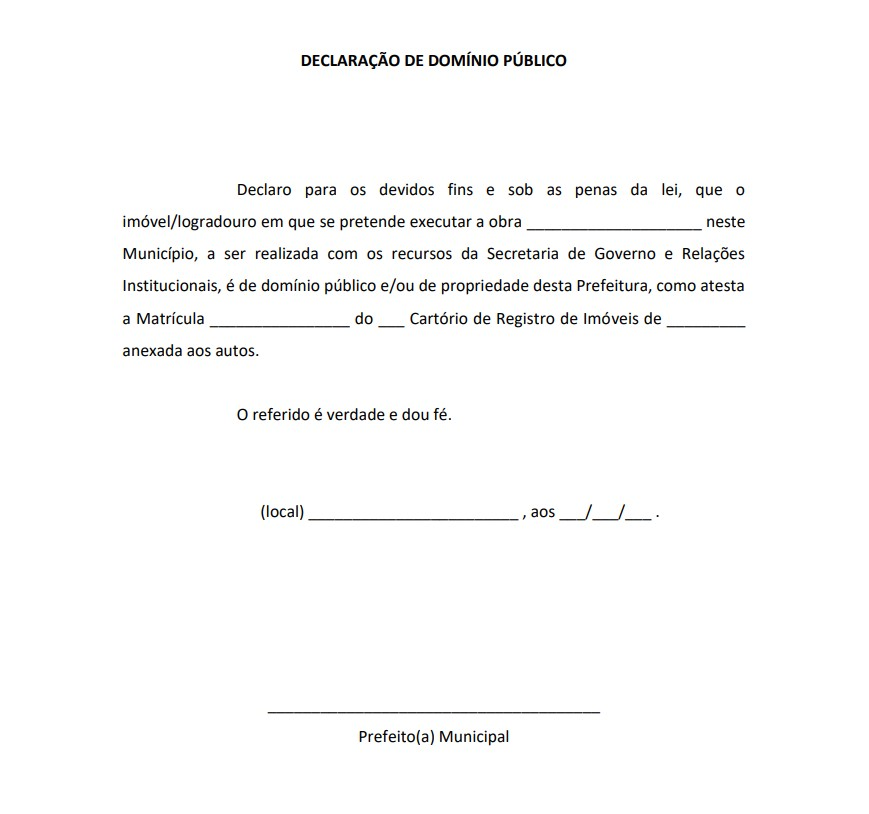

8.12. Anexo 5-C
8.12. Anexo 5-C
Modelo de Declaração de Domínio Público - para obras de edificações ou outros que necessitem apresentação da Matrícula do local
É OBRIGATÓRIO que tenha o timbre da prefeitura (beneficiário).

Modelo de Declaração de Domínio Público - para obras de edificações ou outros que necessitem apresentação da Matrícula do local